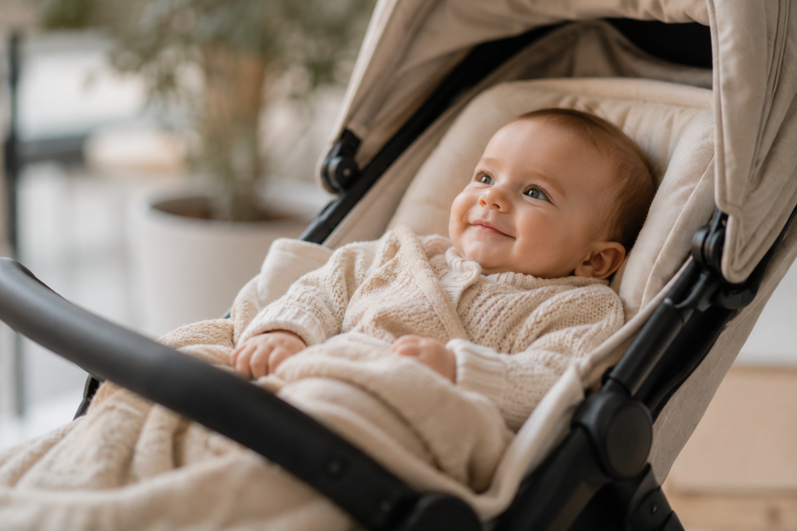
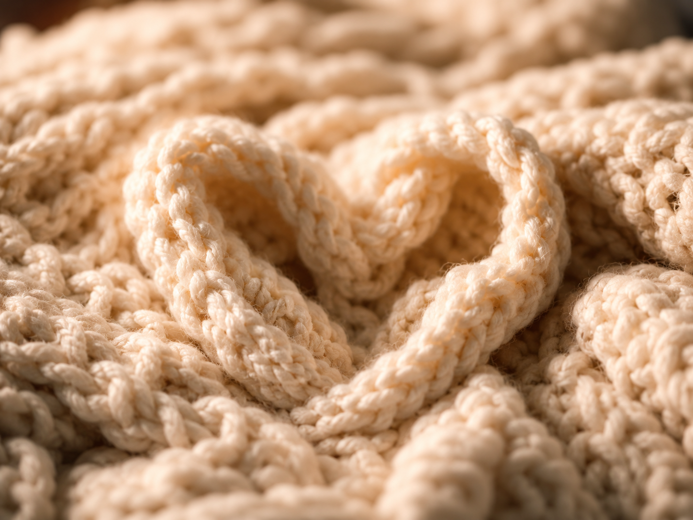

Serce Mamy
Stowarzyszenie
Wsparcie · Pomóż
Twoja pomoc może stać się realną zmianą dla mam długo przebywających na oddziale patologii ciąży, dla wcześniaków oraz dla rodzin czekających na bezpieczny powrót do domu. Każda wpłata — niezależnie od wysokości — przekłada się na sprzęt, materiały i wsparcie, które ratują i ułatwiają życie najmłodszych pacjentów.


Wsparcie
Państwa pomoc może stać się realną zmianą dla mam długo przebywających na oddziale patologii ciąży, dla wcześniaków oraz dla rodzin czekających na bezpieczny powrót do domu.
Materiały pielęgnacyjne, zestawy dla rodziców na oddziale, materiały edukacyjne. Realna pomoc od pierwszego dnia.
Krzesła do kangurowania, zasłony i osłony inkubatorów redukujące stymulację sensoryczną. Pomaga rodzicom być fizycznie blisko.
Pełny cykl warsztatów: karmienie, pielęgnacja, rehabilitacja, wsparcie psychologiczne. Każdy rodzic zyskuje wiedzę i pewność siebie.
Inkubatory, respiratory, pompy infuzyjne. Sprzęt, który dosłownie ratuje życie. Każde urządzenie to realna szansa dla konkretnego dziecka.
Kompleksowy program neurologicznej opieki — EEG, USG mózgu, rehabilitacja neurologiczna w pierwszych miesiącach życia. Każdy dzień ma tu znaczenie.
Partnerstwo może obejmować wsparcie finansowe, rzeczowe, organizacyjne, edukacyjne lub promocyjne. Każda forma pomocy ma znaczenie — od dużego partnerstwa instytucjonalnego po indywidualną darowiznę.
Skontaktuj się z nami →Kontakt
Napisz do nas — niezależnie czy szukasz wsparcia, chcesz pomóc, czy masz pytania.
Wypełnij formularz — odezwiemy się w ciągu 24 godzin.